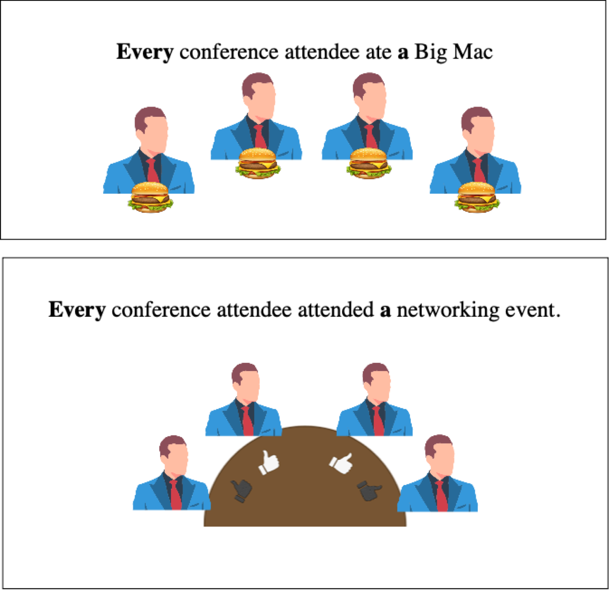
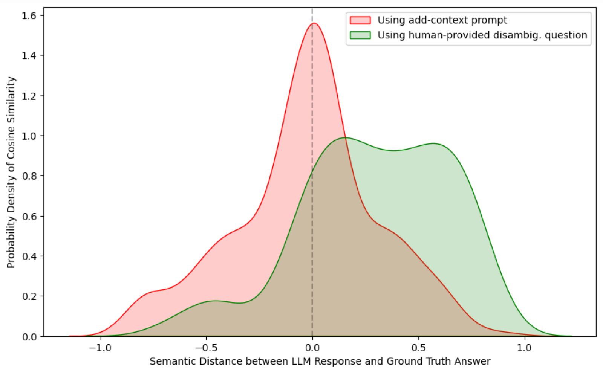
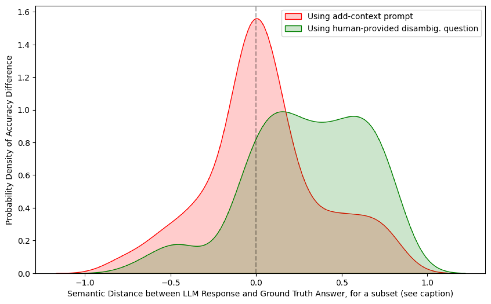
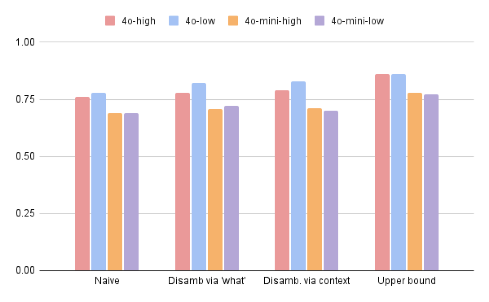

Ambiguity in natural language poses significant challenges to Large Language Models (LLMs) used for open-domain question answering. LLMs often struggle with the inherent uncertainties of human communication, leading to misinterpretations, miscommunications, hallucinations, and biased responses. This significantly weakens their ability to be used for tasks like fact-checking, question answering, feature extraction, and sentiment analysis. Using open-domain question answering as a test case, we compare off-the-shelf and few-shot LLM performance, focusing on measuring the impact of explicit disambiguation strategies.
We demonstrate how simple, training-free, token-level disambiguation methods may be effectively used to improve LLM performance for ambiguous question answering tasks. We empirically show our findings and discuss best practices and broader impacts regarding ambiguity in LLMs.
We define the task over a dataset of triples (qi, qdi, âi), where qi is the ambiguous question, qdi its human-disambiguated rewrite, and âi the ground-truth answer. For an LLM M, we compare M(qi) against M(qdi), and against two training-free prompts that try to close the gap without access to the human rewrite.
Answer the question as concisely as possible with ONLY one answer
without any other text:
Question: {x}Rephrasing a question to begin with "what" makes it more specific and reduces response variability (rephrased questions were ~1.45× longer on average).
Rewrite this question replacing all questions with a what, but retain
the meaning by specifying what entity or what person or what timeframe
the "what" is answering. Also, specify the current year is 2018 if
needed to answer a time-based question.
Question: {x}We ask the model to generate context from its own world knowledge to reduce scope ambiguity, then append the original question. The context-enriched questions ran about 14.2× longer than the originals.
Add extra information to the following question. Also specify the
current month and year is January 2018, so answer questions accordingly.
Your aim is to disambiguate what it is asking.
Question: {x}
Scope ambiguity: two questions with identical structure but different meaning are separated by adding entity context.
We evaluate on 1,000 randomly sampled ambiguous questions from AmbigQA (a subset of Google's NQ-Open), scoring answers by cosine similarity of text-embedding-3-large embeddings against ground truth. Higher GT Answer Overlap is better. For both GPT-4o and GPT-4o-mini, training-free disambiguation beats the naive baseline, with adding context best.
| Metric | Naive | Disamb. via 'what' | Disamb. via context | Upper-bound (GT disamb.) |
|---|---|---|---|---|
| Question coherence | – | 0.905 | 0.743 | 0.317 |
| Naive Answer Overlap | – | 0.826 | 0.799 | 0.895 |
| GT Answer Overlap ↑ | 0.759 | 0.778 | 0.789 | 0.858 |
| Metric | Naive | Disamb. via 'what' | Disamb. via context | Upper-bound (GT disamb.) |
|---|---|---|---|---|
| Question coherence | – | 0.907 | 0.739 | 0.317 |
| Naive Answer Overlap | – | 0.771 | 0.739 | 0.745 |
| GT Answer Overlap ↑ | 0.692 | 0.707 | 0.71 | 0.783 |

Full sample: cosine similarity of LLM response vs. ground truth for the two disambiguation strategies.

Human-resolvable subset: here adding context skews right. LLMs disambiguate well in the cases humans can too.

Temperature ablation: lowering temperature from 1.0 to 0.2 yields only minor, non-significant differences.
Not reliably. GPT-4o and GPT-4o-mini often settle on a single reading of an ambiguous question and answer confidently, even when the wording admits several valid answers. They do better once the question is disambiguated, especially in the cases humans also find resolvable.
Use a training-free disambiguation prompt. Either rephrase the question to start with "what", or have the model add context from its own world knowledge before answering. Both raise ground-truth answer overlap over naive prompting, and adding context works best.
Not at the scale tested. Few-shot fine-tuning of GPT-4o-mini on 50 QA pairs slightly reduced accuracy (0.626 vs. 0.643 naive), likely from catastrophic forgetting.
No meaningful benefit. Dropping temperature from 1.0 to 0.2 gives only minor, non-significant changes.
1,000 ambiguous questions sampled from AmbigQA (a subset of Google's NQ-Open), evaluated on OpenAI GPT-4o and GPT-4o-mini, scored by cosine similarity of text-embedding-3-large embeddings.
@inproceedings{keluskar2024llms,
title={Do llms understand ambiguity in text? a case study in open-world question answering},
author={Keluskar, Aryan and Bhattacharjee, Amrita and Liu, Huan},
booktitle={2024 IEEE International Conference on Big Data (BigData)},
pages={7485--7490},
year={2024},
organization={IEEE}
}